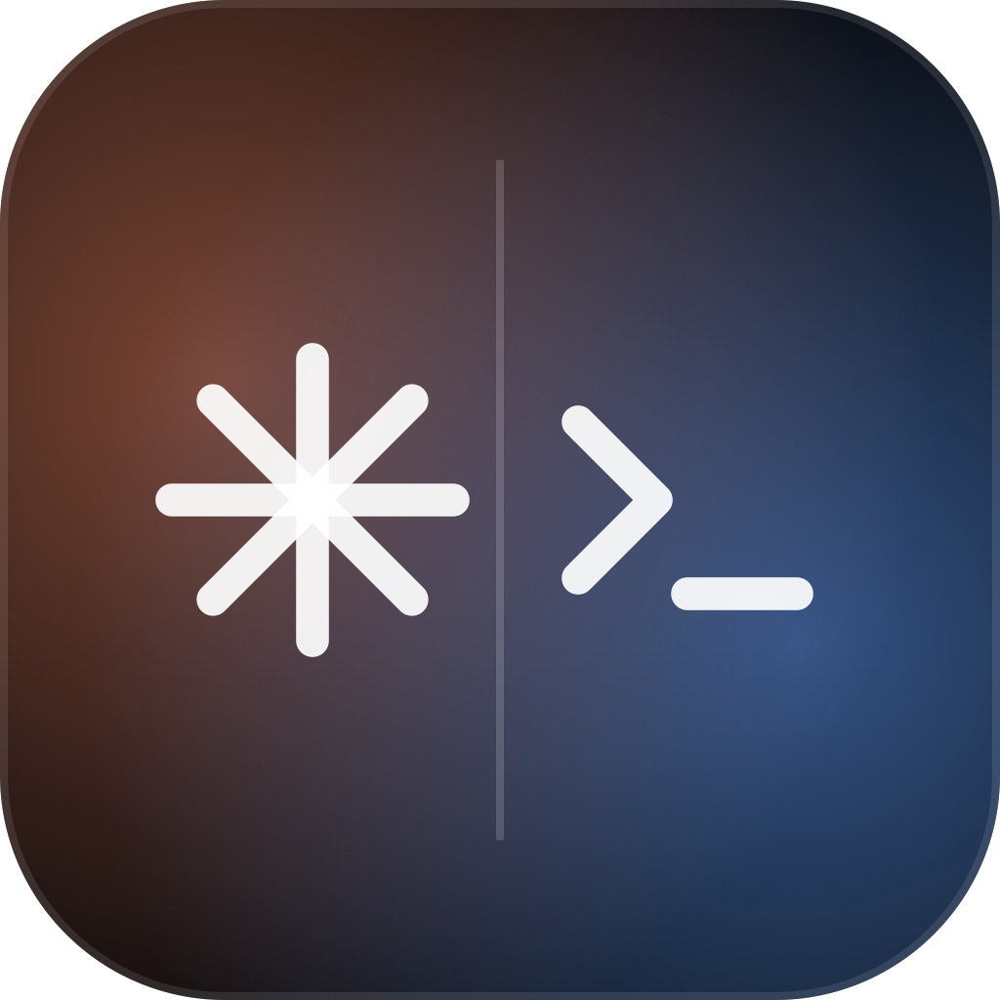

1
Default one-liner
Continuum is a native Mac, iPhone, and Watch control plane for coding agents: launch sessions, compare models, track costs, approve plans, and steer long-running work from your phone.
A visual go-to-market plan for Continuum: a native Mac, iPhone, and Watch control plane for local coding agents. The launch strategy is honest by design: ship Mac-first, prove iPhone and Watch reliability, then scale App Store, SEO, community, and model-optimization distribution.
 Claude
Plan
Claude
Plan
 Codex
Ready
Codex
Ready
"IDE" invites a direct fight with Cursor, VS Code, Zed, and Xcode. "Control plane" matches the architecture: Mac daemon, paired mobile surfaces, provider runtimes, session orchestration, model choices, usage analytics, and approvals.
Continuum is a native Mac, iPhone, and Watch control plane for coding agents: launch sessions, compare models, track costs, approve plans, and steer long-running work from your phone.
Mac-based coding-agent power users who already use Claude Code, Codex, Cursor, OpenCode, Gemini, or Antigravity and need their agents to keep moving when they step away.
Coding agents are becoming separate CLIs, desktop apps, subscriptions, model choices, and cost ledgers. Continuum wins by becoming the local, native, mobile-aware cockpit for that swarm.
The strongest marketing move is specificity. The report should make the product feel more trustworthy because it names the current boundaries instead of sanding them down.
The first users should tolerate a DMG beta, provider quirks, and Tailscale while giving high-signal feedback on the mobile workflow.
Mac-based coding-agent power users with real Claude, Codex, Cursor, OpenCode, Gemini, or Antigravity workflows.
Indie builders and agent-heavy founders who want a phone control surface more than an enterprise dashboard.
Agent researchers and power users who care about multi-agent comparison, telemetry, and model optimization.
The wedge is not "AI coding on a phone." The wedge is "your Mac keeps doing the real work, and your phone keeps the run moving."
Mac owns the daemon, provider runtimes, local auth, repo context, usage parsing, and diagnostics.

iPhone becomes the control surface for sessions, model choice, preflight cost, and live inspection.

Plan approval becomes glanceable and tactile, not buried in a terminal at your desk.
Inspect diffs, terminal output, PRs, artifacts, and cost so the agent can continue with supervision.
The schedule is not a marketing calendar. It is a readiness machine: every phase earns the right to widen distribution.
Sync versions, remove stale claims, create provider matrix, security page, privacy page, known limitations, and update tag contract.
Record Mac+iPhone+Watch demo, build landing page, create waitlist, write pair-your-iPhone and first-session guides.
Invite 10 to 25 known users, watch onboarding calls, collect friction, fix only activation blockers.
Publish GitHub Release, support docs, provider pages, build notes, and demo-first social launch.
Validate entitlements, submit TestFlight, publish core SEO pages, add analytics, and prep App Store variants.
Review activation and retention. Choose App Store launch or continued TestFlight based on mobile reliability.
Screenshots must show the app in use: iPhone starts or controls a session, Watch approves, Mac workbench proves the source of truth, then analytics and pairing explain trust.
Continuum
Keep the name. The work is in making the first screenshots explain the paired-device workflow.
Control coding agents
Clear, keyword-bearing, and avoids overclaiming a full standalone mobile IDE.
30 seconds
iPhone opens, session starts, Mac runs, Watch approves, diff inspected, cost shown.
SEO should grow from real workflows: mobile control, provider compatibility, model costs, local-first security, and build logs.
control Claude Code from iPhone, Codex mobile app, OpenCode iOS, Cursor agent CLI usage, AI coding agent cost tracker.
Mobile control, model optimization, provider workflows, trust/local-first, and release/build logs.
Useful pages first, descriptive URLs, unique metadata, crawlable docs, screenshots near text, alt text, internal links, and structured data.
Most tools sell a smarter model. Continuum can sell model choice as an operating system for agent work.

This table is a GTM asset. It prevents bad expectations and gives provider-specific campaigns a source of truth.
| Provider | Launch session | Resume | Chat | Code session | Plan mode | Model/effort | Usage/cost | Mobile support | Caveat |
|---|---|---|---|---|---|---|---|---|---|
| Claude | Yes | Yes | Yes | Yes | Yes | Yes | Strong | Strong | Keep local auth and release sandbox docs explicit. |
| Codex CLI/SDK | Yes | Yes | Yes | Yes | Yes | Yes | Strong | Strong | Different CLI and SDK semantics must stay labeled. |
| Gemini/Antigravity | Gated | Gated | Yes | Gated | Gated | Yes | Partial | Gated | V2 source and sidecar behavior must remain current. |
| OpenCode | Yes | Partial | Runtime path | Yes | Runtime-specific | Partial | Yes | Gated | Position as integration, not fork or replacement. |
| Cursor | Yes | Proven IDs only | No broad claim | Yes | Gated | Dynamic | Live-period | Gated | Works alongside Cursor. Do not claim Cursor replacement. |
Gates keep the strategy from outrunning the product and make the launch feel more credible to technical users.
Sync versions, fix stale docs, decide license posture, publish security/privacy/limitations, fix release tag contract.
Clean install works, provider matrix is accurate, real session launches, iPhone pairs, usage is plausible.
Paid Developer setup, Fastlane proven, entitlements validated, reviewer path documented, real screenshots created.
Fresh install to mobile-controlled session is under ten minutes, pairing errors are legible, support path exists.
The north star is not downloads. It is a user taking a meaningful control action from iPhone or Watch while the Mac does the real work.
A coding-agent session where the user performs at least one meaningful control action from iPhone or Watch: start, approve, interrupt, send, resume, inspect diff, inspect PR, terminal, or artifact.
The first week should make the product easier to trust before it makes the product louder.
The HTML condenses the markdown strategy and keeps the source trail visible for execution and review.
Distribution should look like proof, not launch copy.
Every channel should start from a visual demo, a workflow guide, or a model-cost insight. The product is technical enough that generic hype will underperform.
loop
Clip to feedback
30-90 second workflow clip, beta install, user feedback, public fix, next clip.
loop
Guide to compatibility
Provider-specific page, community discussion, caveat discovered, matrix updated.
loop
Insight to trust
Usage or benchmark insight, model optimization content, credibility, install.
Launch thread skeleton
I built Continuum because my coding agents kept running while I was away from the Mac. The Mac still does the real work. The phone is the control plane. The aha moment is a Watch approval that keeps the run moving. It is early: Mac DMG beta first, TestFlight next, public claims tied to shipped gates.